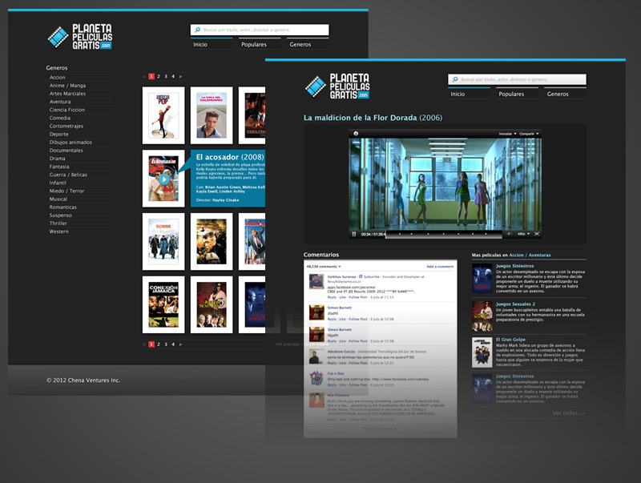

Concepto, diseño, HTML & CSS Programación: Augusto Ruibal.
Este es el diseño puro, sin banners por ningún lado. Creo recordar que el sitio final tenía una página intermedia, que iba entre donde uno elegía la película y donde la veía, con información sobre cada película y un par de avisos publicitarios. Prefiero mostrarlo así.
